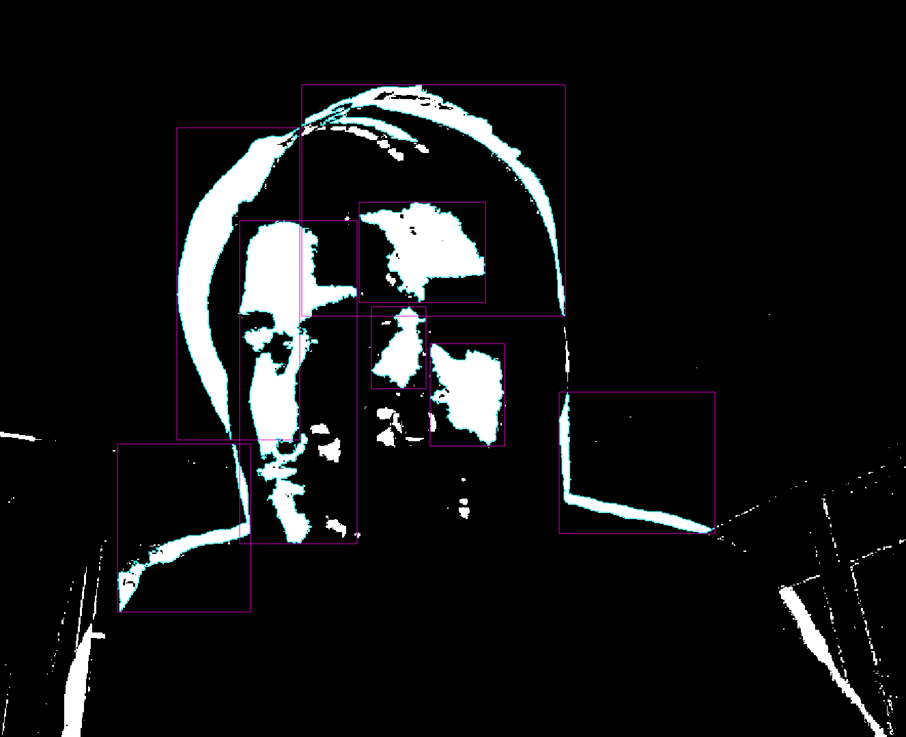

Bio:
Ndr0n is an audio-visual project, designed by Afonso Proenca, from Lisbon, Portugal.
The aesthetic emerges from the mechanical routines present in modern society, alluding to a dark reality where meaning is fabricated and behaviour is scripted.
Ndr0n is a portrait of the synthetic emotion experienced in urban living.
Defined by concepts such as transhumanism and technological singularity, the artist attempts to sonify the personification of self-conscious machines.
contact: ndr0n.pc@gmail.com